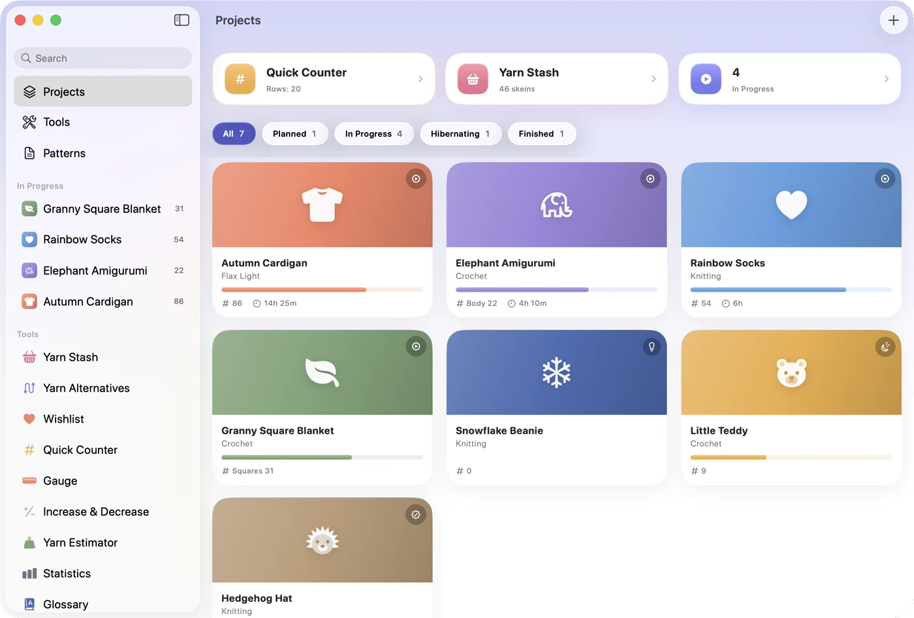
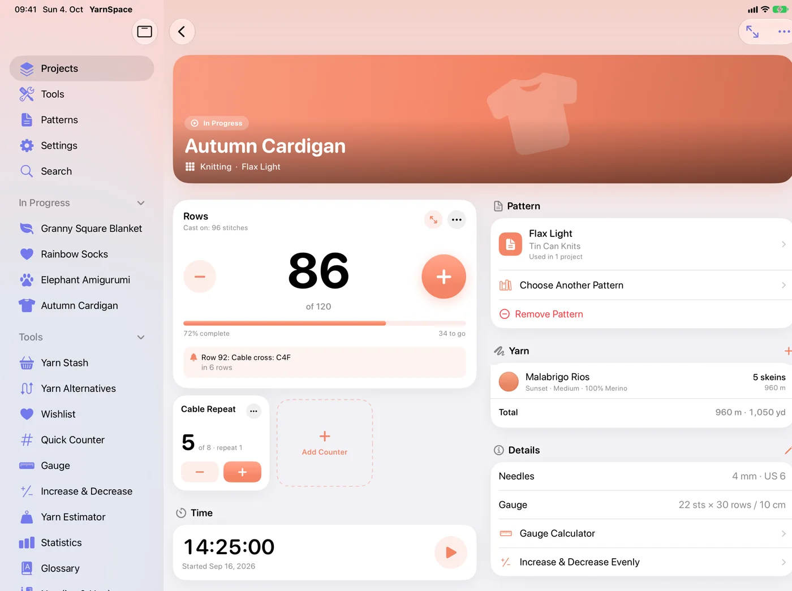
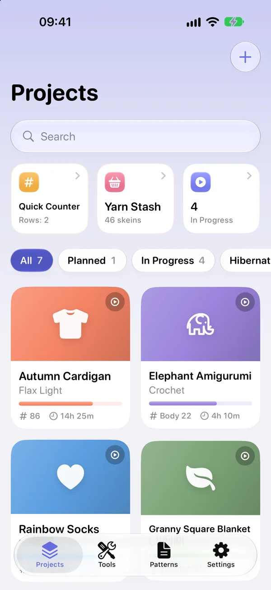
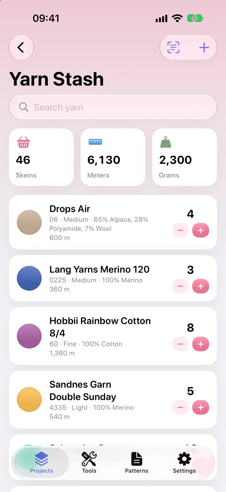
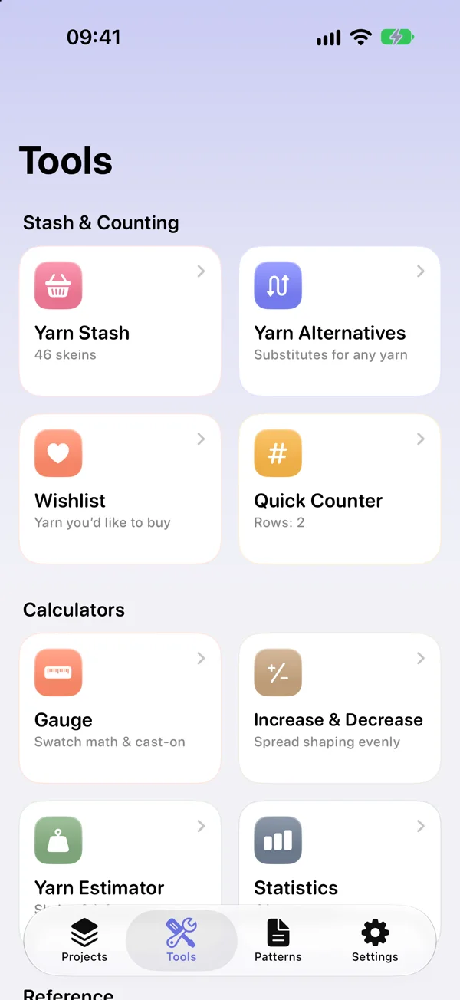
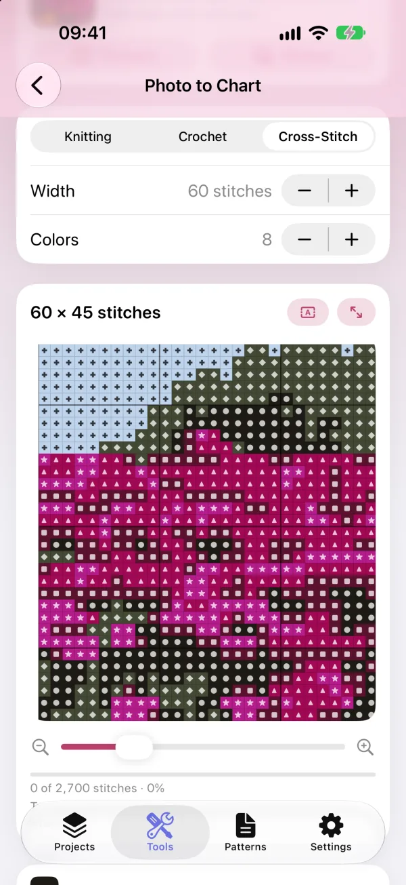
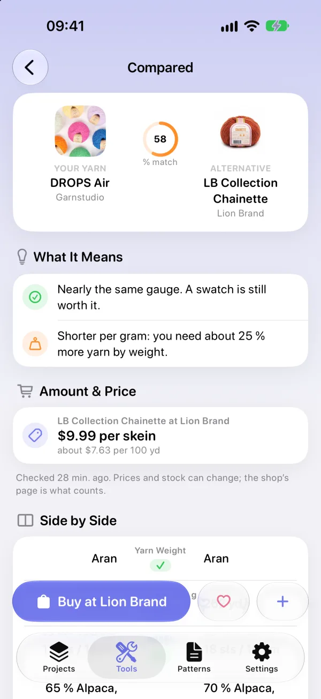
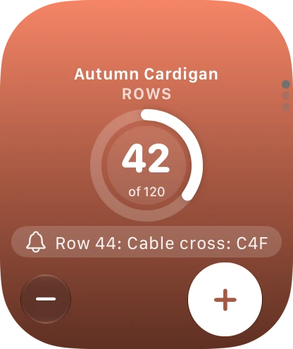

Row counter for every project
Counters for rows, stitches and repeats, with reminders like “decrease in row 24”.
- A big focus counter you can tap without looking
- Timer, photos and notes
Never lose your row again. YarnSpace keeps your projects, patterns and yarn stash in one place, on iPhone, iPad, Mac and Apple Watch.
For iPhone, iPad, Mac and Apple Watch · in 5 languages



Everything a knitter or crocheter reaches for, without switching between a row counter app, a notes app and a spreadsheet.
Counters for rows, stitches and repeats, with reminders like “decrease in row 24”.
Count on your wrist while your hands stay on the needles.
Your own PDFs and links, plus Ravelry patterns with filters and ratings.
Every skein you own, plus a wishlist for the ones you want.
Alternatives by gauge, yardage and fiber, vegan too, compared side by side.
The maths done for you, right next to your projects.
One app that feels at home on every screen, with your projects synced through your iCloud.








Tap the plus after every row while your hands stay on the needles. A little tap on your wrist for each row, a stronger one when a reminder is due, and your row on the watch face with a widget.
The Apple Watch app is part of YarnSpace Pro.

Pick a photo and get a chart for colorwork knitting, tapestry crochet or cross-stitch, sized to your gauge so nothing comes out squashed. Work right from it and check off stitches as you go.
Making charts is free. Saving them and checking off stitches is part of YarnSpace Pro.
YarnSpace reads brand, color, fiber, yardage, gauge and needle size from the label and fills in the yarn for you, matched with Ravelry.
Read entirely on your device; the photo is never stored or uploaded.
For every pattern, YarnSpace checks your stash for the yarn it calls for or one that works just as well, tells you if you have enough and how many skeins are missing.
No account and no tracking, just anonymous usage statistics you can turn off. Your projects, patterns, stash and photos live on your device and, if you want, in your own iCloud, where only you can see them.
Most of YarnSpace is free. Pro adds the Apple Watch, yarn substitutes and more.
Free download
No time limit, no account.
Monthly or yearly subscription
Cancel anytime in your Apple Account settings.
Practical guides for the questions that come up while you knit and crochet, with the numbers worked out.
Match the gauge, compare fiber and work out how many skeins you need.
Pick the right picture, size it to your gauge and keep the colors few.
Why gauge matters, how to measure it and what to do when it's off.
Spread increases or decreases across a row, or over many rows.
Metric, US and UK knitting needle sizes and US crochet hook letters.
Work it out from the pattern, or from a swatch when there's no pattern.
More guidesCast-on stitchesSweater stitch countYarn weight chartUS vs UK crochet termsReading a yarn label
YarnSpace as aRow counter appYarn stash appRavelry appCrochet app
Yes. YarnSpace is free to download and you can use it for up to three projects at a time, with all counters, your yarn stash, patterns and most tools. YarnSpace Pro, monthly or yearly with a one-week free trial, unlocks unlimited projects, the Apple Watch app, all yarn substitutes, label scanning and more.
Yes. Counters, patterns, the yarn stash and the calculators work for knitting and crochet alike, and the reference includes knitting needle and crochet hook sizes as well as US/UK crochet terms.
No. You can discover and search Ravelry patterns and yarns without an account. YarnSpace is not made by, affiliated with or endorsed by Ravelry.
iPhone and iPad with iOS 26 or later, Mac with macOS 26 or later and Apple Watch with watchOS 26 or later. Your projects sync through your own iCloud.
YarnSpace needs no account and doesn't track you; only anonymous usage statistics, which you can turn off. Your projects, patterns, yarn stash and photos stay on your device and, if you turn it on, in your own iCloud. Details are in the privacy policy.
Point your camera at a yarn label. YarnSpace reads brand, yarn name, color number, fibers, yardage, gauge and needle size entirely on your device and fills in the yarn for you.
YarnSpace is on the App Store for iPhone, iPad, Mac and Apple Watch. Free to download.